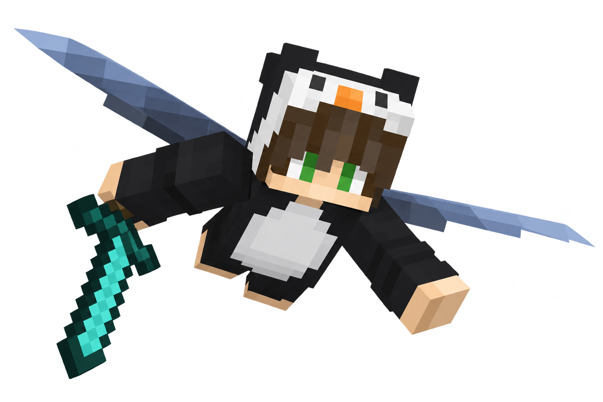

Конструктор HUD
Перетащи панели и сохрани раскладку в браузере.
Твоя игра. Твоя вселенная.
Визуалы, HUD и косметика для Minecraft.
Визуалы, удобный интерфейс и полезные детали.
Всё для твоего Minecraft — в CosmoVisuals 0.7.
Перетащи панели и сохрани раскладку в браузере.
Настроение мира, мягкое свечение и эффекты в твоём стиле.


Перезарядки, смена экипировки и быстрые действия под рукой.
Отмечай важные места и возвращайся к ним без долгих поисков.
Сохраняй любимые настройки и переключайся между готовыми образами.
Название, FPS и пинг в одной капсуле. Важная информация — с первого взгляда.
Маленькая деталь. Большая разница.
Выбери образ и повращай персонажа.
Потяни за разделитель.
Слева — CosmoVisuals. Справа — привычный Minecraft.

Визуалы, HUD и косметика в одном интерфейсе.
Всё, чтобы твой Minecraft ощущался твоим.
Да. Мод бесплатный, подписка и оплата не нужны.
Скачай CosmoVisuals 0.7 Beta. Нужны Minecraft 1.21.11, Fabric Loader 0.19.5+, Fabric API и Java 21+. Помести JAR в папку mods и запусти профиль Fabric.
Визуальные эффекты, элементы HUD, косметику и утилиты. Интерфейс и примеры показаны на этой странице.
У каждого сервера свои правила модификаций. Проверь их перед использованием и включай только разрешённые функции.